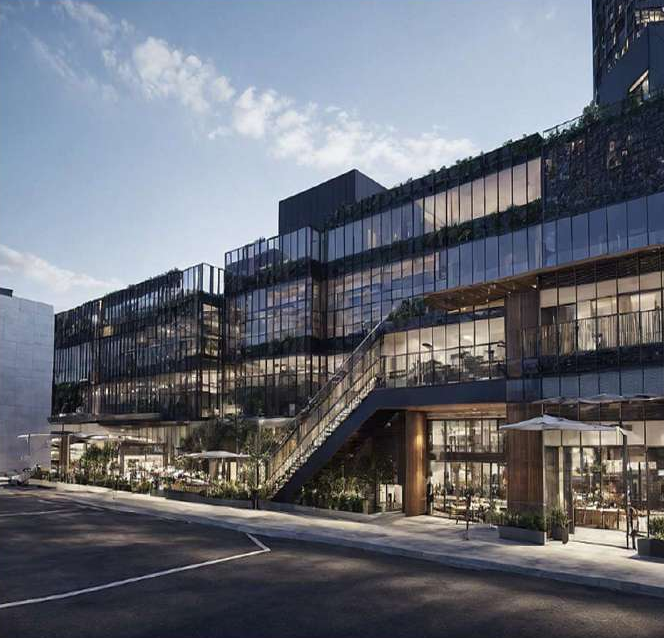

NEXUS TERMINAL / PORTO, PORTUGAL PRE-CONSTRUCTION STUDY

Every decision.Before day one.BIM COORDINATION → QUANTITIES → CRITICAL PATH
TIME / COST / COORDINATION01 — THE BUILDER
01 / FEATURED PRE-CONSTRUCTION
Nexus Terminal
BIM coordination, scheduling & estimation · Porto, Portugal
A multi-level metro station, considered before construction begins. Six months of pre-construction work connect feasibility, coordinated BIM models, Bluebeam takeoffs, and Primavera P6 sequencing.